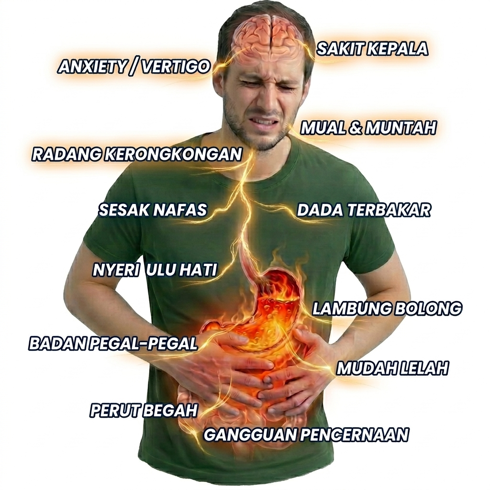

Perut terlalu penuh membuat tekanan di lambung naik, jadi asam lebih mudah “muncrat balik” ke atas.
Ini salah satu pemicu paling sering. Usahakan beri jeda sebelum tidur dan jangan langsung berbaring setelah makan.
Contohnya gorengan, makanan berlemak, pedas, cokelat, makanan asam, kopi, teh, soda, jus jeruk, dan tomat.
Perut yang lebih besar bisa menekan lambung, sehingga asam lebih mudah naik. Obesitas juga termasuk faktor risiko GERD.
Rokok bisa mengganggu fungsi katup bawah kerongkongan, jadi asam lebih mudah naik ke atas.
Stres bukan selalu penyebab langsung, tapi bisa memperparah gejala karena pola makan jadi kacau, tidur terganggu, dan tubuh lebih sensitif.
Pada sebagian orang, ada masalah struktur atau fungsi lambung sehingga asam lebih gampang naik.
Sensasi panas seperti terbakar di dada sering disebut heartburn dan bisa muncul setelah makan atau saat berbaring.
Asam yang naik ke kerongkongan bisa membuat mulut terasa pahit, asam, atau tidak nyaman.
Perut bisa terasa penuh, kembung, mual, cepat kenyang, atau tidak nyaman di sekitar ulu hati.
Sendawa berulang bisa muncul saat lambung terasa penuh atau saat gas di pencernaan meningkat.
Pada sebagian orang, asam yang naik bisa mengganggu tenggorokan, terutama saat malam atau setelah rebahan.
Rasa panas, penuh, atau tidak nyaman di dada kadang membuat napas terasa kurang lega, walau penyebab pastinya perlu diperiksa.
Begah, mual, dada panas, dan rasa tidak nyaman bisa membuat kerja, ibadah, tidur, dan makan jadi terganggu.
Gejala sering terasa lebih mengganggu saat malam karena posisi tubuh berbaring membuat asam lebih mudah naik.
Bila asam sering naik, dinding kerongkongan bisa ikut teriritasi dan menimbulkan rasa panas atau nyeri.
Banyak orang jadi takut makan karena khawatir kambuh, akhirnya pola makan makin tidak teratur.
Asam yang naik dapat membuat tenggorokan terasa mengganjal, suara serak, atau batuk yang muncul berulang.
Segera periksa jika nyeri dada berat, sulit menelan, muntah darah, BAB hitam, berat badan turun drastis, atau keluhan makin sering.
Hindari makan terlalu penuh. Lebih baik makan secukupnya, perlahan, dan jangan menunggu sampai perut terlalu kosong.
Pikiran yang bahagia dan badan yang lebih sehat dapat membantu mengurangi tekanan pada area perut dan lambung.
Saat lambung sensitif, pilih makanan atau minuman yang lebih ringan dan bersifat gastroprotektif bagi lambung.
Nutriflakes adalah sereal umbi garut yang praktis dikonsumsi sebagai teman sarapan, pengganjal perut, atau asupan harian saat lambung terasa kurang nyaman.
Cocok untuk Anda yang ingin mulai menjaga pola makan dengan pilihan yang lebih lembut dan mudah diseduh.
Membantu mengurangi asam lambung tinggi
Membantu mengurangi gejala GERD
Membantu mengurangi sakit maag
Membantu mengurangi perut mual
Membantu mengurangi nyeri ulu hati
Membantu mengurangi perut kembung dan begah
Membantu menjaga kenyamanan pencernaan
Membantu mendukung kesehatan lambung dan usus
Membantu mengurangi dada panas
Membantu mengurangi rasa tidak nyaman di dada
Membantu mengurangi mulut pahit atau asam
Membantu mengurangi tenggorokan tidak nyaman
Membantu mengurangi suara serak akibat lambung naik
Membantu tubuh lebih nyaman saat gejala muncul malam hari
Membantu mengurangi kepala kliyengan
Membantu tubuh terasa lebih nyaman saat kepala tegang
Membantu tidur lebih nyaman saat lambung tenang
Membantu tubuh terasa lebih nyaman saat stres
Membantu tubuh tidak mudah lemas dan lelah
Membantu menjaga daya tahan tubuh